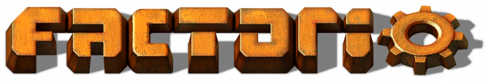
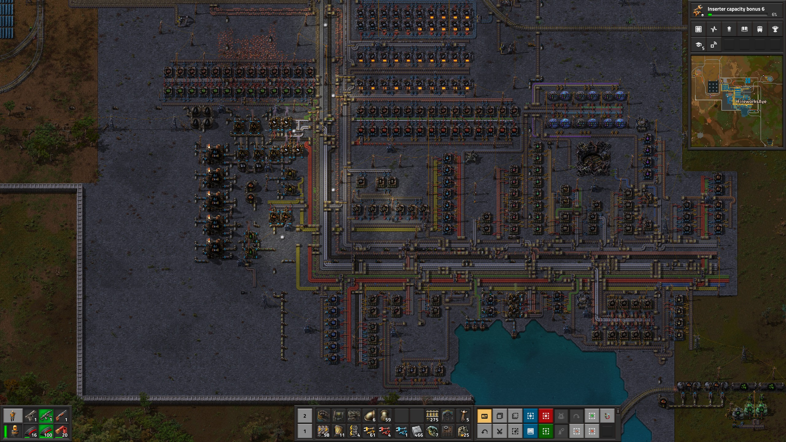

Factorio

| Release Date: | February 25th, 2016 |
| Genre: | Sandbox |
| Developer: | Wube Software |
| Platform: | PC, Mac, & Nintendo Switch |
| Details: | Website |
Factorio is a sandbox factory-building game developed by Wube Software. The premise of the game is that you've crash landed on a barren planet, and you need to use the local resources to build a new rocket ship and defend yourself from the hostile bugs of the planet. This has been a game in my library for a long time, and I’ve played it off and on over the years. However, I’ve never “completed” a save, always stopping roughly a third of the way through the research tree. I had some time before a new game was to be released, so figured it’d be the perfect time to do a full run and experience the game to the end finally.
This game is very different from the previous games I’ve written about on this site. Outside of that initial premise, there’s no other story or objectives outside of developing your factory and surviving; it just drops you onto the planet, and lets you do whatever you’d like.
Gameplay
This game centers around the idea that you’re developing a factory to aid your progression towards launching a rocket into space. While you could do all the mining and crafting yourself, that would take an astronomical amount of time to achieve, pushing you to create various machines to automate some of these tasks for you. These machines are usually designed around a specific task, like a drill to automate mining, a furnace for smelting, a crafter for crafting, etc, but there’s also some machines for logistics, like conveyor belts to move items around and inserters to move items into machines. It gives you lots of tools to put together these various machines to automate complex tasks, almost like a puzzle to make your life easier.
While the overall goal is to send a rocket into space, you need to progress through the research tree to eventually unlock the ability to construct the rocket’s launch pad. With each completed research task, you unlock more crafting recipes to further develop your factory. It gives you smaller goals to strive towards and helps focus you into what part of the factory needs expanding, while also giving you a sense of progression in this sandbox, unlocking more tools to make your factory more efficient.
The game also does a great job of introducing you to the new machines that you research, as you unlock tutorial pages alongside the new machines that are optional to read, but teaches you how to use the machine. Some tutorials are just documents and a short video, but others are interactive where they put you in a simulation room and give you a guided tutorial. It helped a lot when trying to learn how to setup train systems or robot networks.
There’s a lot of replayability here as well. Once you launch your first rocket, you’ll be congratulated and receive your completion time. This encourages multiple playthroughs to try to improve your factory design and launch the rocket quicker. When you start this new run, you could also adjust the world generation to make things easier or harder for yourself, allowing you to tweak your experience further. You’re not required to create a new world either, as you can continue your completed save to make improvements and automate the rocket launching process to receive more science to unlock the end-game machines.
Visuals & Audio
While the visuals and audio of this game aren’t groundbreaking, they are designed well to aid in the immersion of the world. When you first load into a world, it’s quiet except for your actions and the music. As you create machines and systems, they start producing their own sounds, filling this empty world with the sounds of industry. It’s a small thing, but it’s just another one of those things that shows how transformative you are to this planet. The visuals are fine, the art direction fits the setting of surviving on a barren planet, but I just want to appreciate the amount of detail put into the art. You’re able to zoom your perspective drastically, so having the art be distinctive and detailed at all zoom levels is a challenge. They’ve done a great job here of them looking distinct at the maximum zoom, but then highly detailed once you get zoomed in.
Overall Thoughts
I find this game to be so much fun, as the problem solving process is at the core design of the overall gameplay loop of the game. They give you all sorts of tools to work with, and it’s up to you to connect them together to create a functional factory. As the factory grows in complexity, so do the problems and figuring out the bottlenecks in the supply chain that need improvement. As a software engineer, I live for solving problems, so a game that has problem solving as its core is addicting. Throughout this two week playthrough, I stayed up far too late on the days I played to "finish this last problem". This game isn’t for everyone, I’ll acknowledge that. If you don’t find enjoyment in designing machines or handling the logistics of factory management, then there’s not much here for you. Those that do find interest in that, then this game was made for you.
Majority of my factory by the end of the playthrough. It's mainly missing the train stations I've made to the north where all the raw resources get brought in.
